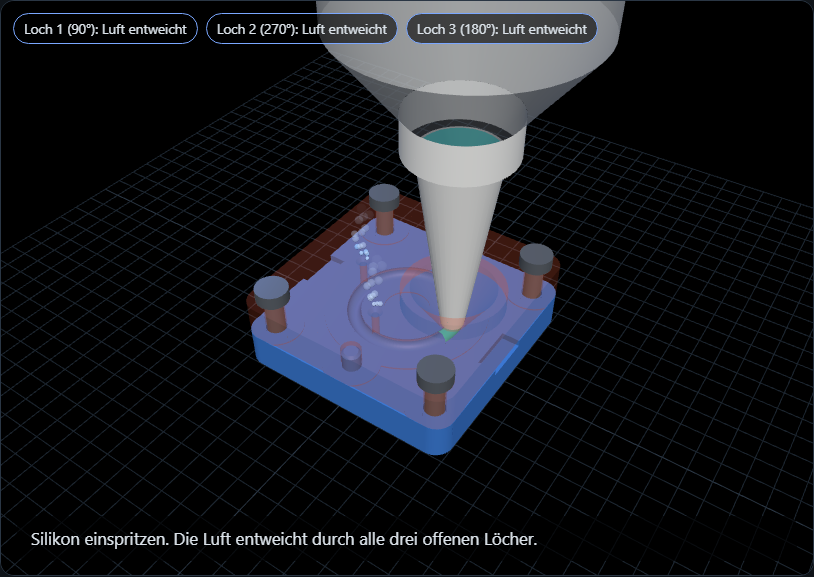

Ja, das 3D-Modell ist geändert. Das Oberteil liegt jetzt nur noch an wenigen Stellen auf, damit Schmutz und Grat die Passung bei wiederholtem Gießen weniger stören.
Die Nummern 1 bis 3 sind die Entlüftungslöcher. Alle drei und der Anguss liegen im Steg, die Dichtung am Ring bleibt also erhalten.
Skizze, nicht maßstäblich.
| Absenkung | 0,4 mm, nur am Oberteil |
| Steg um Ring | 5 mm breit beidseits (r 5 bis 18 mm) |
| Pads | Ø 12 mm um 4 Schrauben und 2 Passstifte |
| Entlüftung, Anguss | liegen im Steg |
| Unterteil | unverändert |
| Geprüft | Modell wasserdicht, Volumen −0,4 cm³. Nicht im Slicer angesehen |

Mit Kegeltrichter und neuer Kartusche. Live: Demo bei githack. Die Absenkung sieht man dort nur beim Anheben des Oberteils.